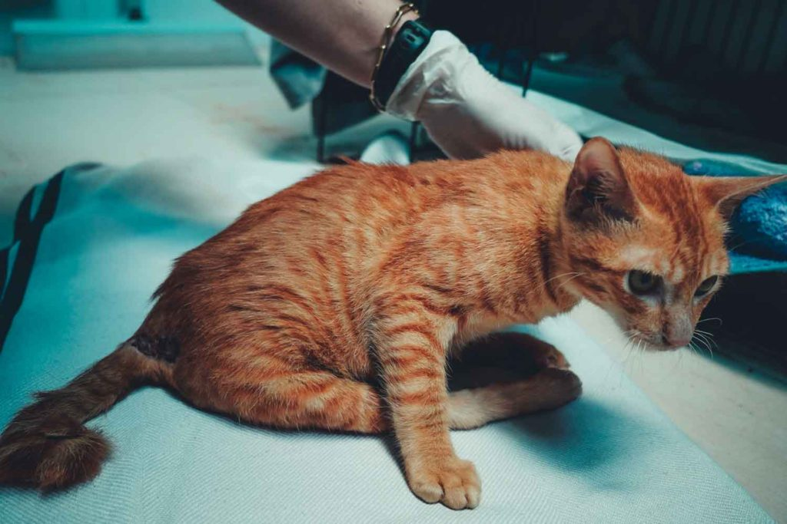

Bảo vệ mèo của bạn khỏi các bệnh truyền nhiễm nghiêm trọng và nguy hiểmv
Đó là một trong những điều quan trọng nhất mà chúng ta nên làm với tư cách là chủ sở hữu thú cưng.Tiêm phòng giúp mèo của bạn được an toàn khỏi:
- Giảm bạch cầu (còn được gọi là bệnh sốt rét ở mèo)
- calicivirus ở mèo
- Viêm mũi do virus ở mèo
- bệnh dại
BÌNH LUẬN cho Paws for Compassion để giành được một phần trong khoản trợ cấp 500.000 USD. Tất cả bạn phải làm là bỏ phiếu!
Mỗi đô la đều được tính là một phiếu bầu để bạn có thể quyên góp và bỏ phiếu!